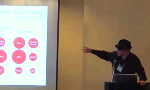

|
Buy Buckyballs ans Support BFI!
For the next three Mondays, 100% profits from Buckyballs online sales are being donated directly to the Buckminster Fuller Challenge. Learn more now!.
|
|
2011 Challenge Deadline Has Ended
Thanks to all that submitted applications, the review team has just begun evaluating this incredible pool of talent. Stay posted.
|
|
Architecting the Future @ Bioneers
A day long seminar that brought together a fantastic cast of leading whole-systems thinkers and distinguished Challenge entrants. See video and photos here
|
TEDx Brooklyn - Nov 13th
BFI is proud to be the fiscal sponsor of TEDxBrooklyn, highlighting the innovative social, technological and artistic work in the borough of Brooklyn. More info here.
|